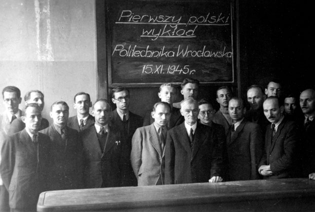

History of Wrocław
Wrocław’s history stretches back over a thousand years, shaped by various empires and cultures.
Early Beginnings
Wrocław began as a Slavic settlement and grew under the Piast dynasty in the Middle Ages.
Austrian & Prussian Influence
During the 18th and 19th centuries, Wrocław came under Austrian and later Prussian rule, which greatly influenced its architecture and development.
World War II and Reconstruction
Much of the city was destroyed during World War II. After the war, Wrocław became part of Poland once again, and extensive rebuilding efforts brought it back to life.
Post-war Development
Throughout the 20th century, Wrocław developed into an important academic, cultural, and industrial center, while also preserving its historical roots. 
Throughout its existence, Wrocław has been a melting pot of cultures and traditions, with influences from Poland, Bohemia, Austria, Prussia, and Germany shaping its identity.